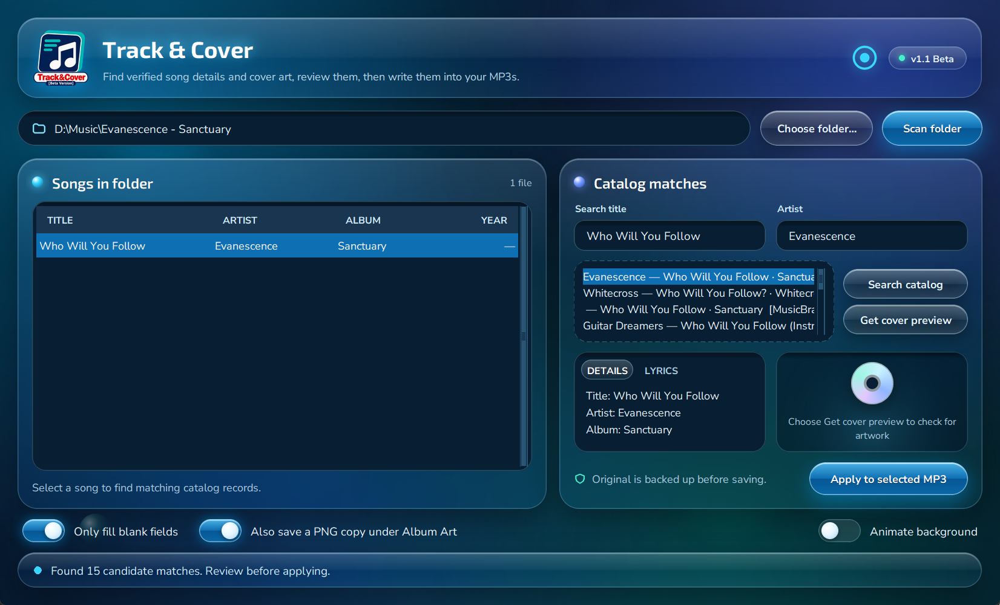

Verified matches
Searches MusicBrainz and Apple's music catalog, ranks the matches and lets you review each one before anything is saved.
Tidy up your music library. Find verified song details, high-resolution cover art and lyrics, review every match, then write them into your MP3s.

Searches MusicBrainz and Apple's music catalog, ranks the matches and lets you review each one before anything is saved.
Previews and embeds 1200 px front-cover artwork in the MP3, and can save a PNG copy in an Album Art folder.
Fetches song lyrics from LRCLIB, matched by title, artist and song length, and saves them in the MP3's standard lyrics tag.
Backs up every original MP3 before changing it, and only fills blank fields unless you choose otherwise.
Title, artist, album, album artist, year, release date, genre, track number and, where available, composer.
A single .exe for Windows: no installer and no Python needed. Sharp on high-DPI screens, with full keyboard support.
Pick a folder of MP3s and press Scan folder. Each song is listed with its current tags.
Select a song and press Search catalog. The best matches appear, strongest first.
Check the details, preview the cover art and fetch the lyrics before you decide.
Press Apply to selected MP3. The original is backed up first, then the tags are written.
Windows shows this blue warning for apps that aren't code-signed by a company. Track & Cover is a free, independent project, so it isn't signed yet.
You only need to do this once. The full source code is public, so anyone can check what the app does.
Tip: try it on a copy of a few songs first. Every original is also backed up automatically to %LOCALAPPDATA%\Track & Cover\Backups.
Yes. Track & Cover is free and open source under the GNU GPL (version 2 or later). The source code is on GitHub.
Not yet. The download is for 64-bit Windows 10 and 11 only.
Only when you press Apply for a song, after reviewing the match. The original file is backed up first, and by default only empty fields are filled, so your existing tags, artwork and lyrics are kept.
When you search, it sends the song title and artist to MusicBrainz, Apple's music search and LRCLIB, and downloads cover art from the Cover Art Archive or Apple. It doesn't collect, store or send anything else, and it has no accounts, tracking or ads.
Some antivirus programs wrongly flag new, unsigned apps built with Python's packaging tools. The full source is public on GitHub, and you can build the app yourself from it. If you trust it, restore the file from quarantine.
Try again first. If it keeps happening, a VPN or your antivirus's web/HTTPS scanning may be interrupting secure connections; pause it and try again.
Lyrics and cover art are copyrighted by their owners. Saving them into your own files for personal listening is fine, but please don't redistribute them.
Free, open source and ready to run on Windows 10 and 11.